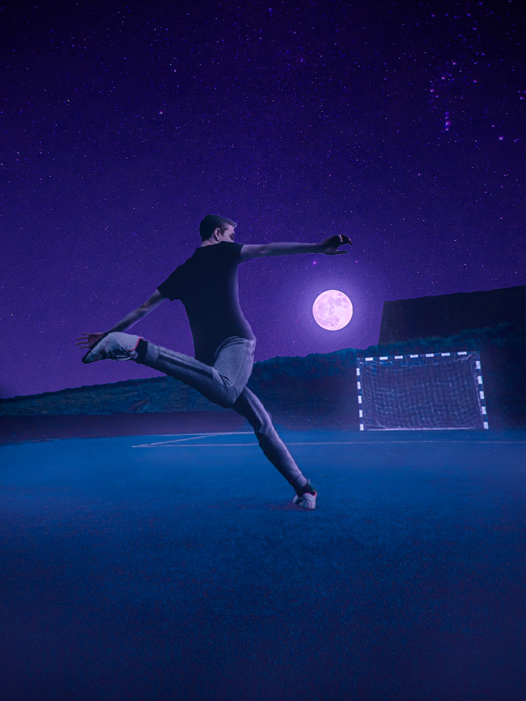
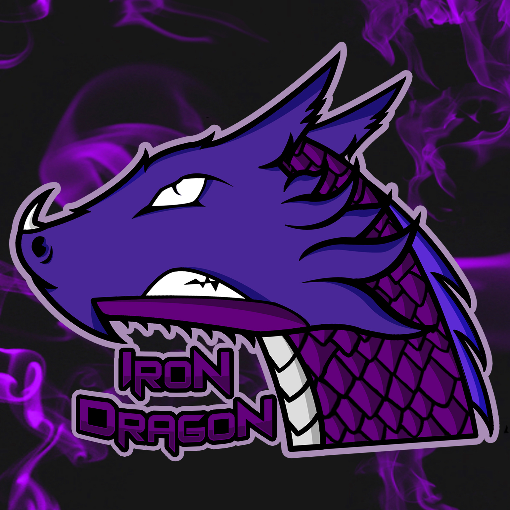

A sport a másik nagy „hobbim”, de inkább az extrém sportokat preferálom. 3 évig fociztam és 5 évig judózottam. Az évek során megtanultam szaltózni is. Sajnos mostanában kevesebbet edzek, mert sok idő elmegy a tanulással.
Ezeket a tevékenységeket szeretem kombinálni is (művészet, sport, játék).
Például, ha a focit és a fotó szerkesztést akarom kombinálni akkor csinálok egy ilyet:
Mivel sokat játszok, ezért úgy döntöttem csinálok magamnak saját logót / profilképet.

Ebből először ez lett:

Majd ez:

Mivel sok embernek tetszettek ezek a képek, úgy döntöttem többet fogok ezzel foglalkozni, csinálok másoknak is stb.
Sok barátomnak csináltam azóta ilyeneket, és nagyon tetszett nekik a végeredmény.